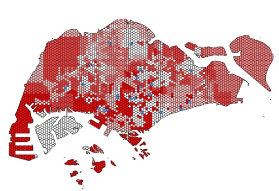

Methodology
1. Filtering tertiary level schools
As the General-Information-of-Schools dataset also includes Primary and Secondary schools, we filtered the data to only include “Junior Colleges” and “Mixed Levels”.
2. Analytical Hexagon
To normalize the geography for mapping and reduce the issue of irregularly shaped polygons, a hexagon layer is created with the shape of MasterPlan 14 using the “Create Grids” function.
This aims to convert the polygon features of MasterPlan 14 into a point feature to run for accessibility analysis.
3. Accessibility Analysis
We ran Origin-Distance Matrix by QNEAT3 using the hexagon layer and location of tertiary level school to calculate the distance between hexagon centroids and junior colleges.
The result layer was categorised by a cloropleth map.

4. Ease of Access to MRT & LRT
Our group decided on a 1km buffer region as an appropriate distance to measure ease of accessibility. Thus, using the Buffer function of QGIS, a dissolved buffer region of 1km around the Junior College is created.
We then clip the LRT and MRT exits layer from data.gov.sg that are within the 1km buffer region.
5. Ease of Access to Bus Stops
To get location of bus stops around Singapore, it is extracted from OpenStreetMap with Geofabrik. The layer is clipped to be within Singapore and filtered to only include bus stops.
We then clip the bus stop layer that are within the 1km buffer region.